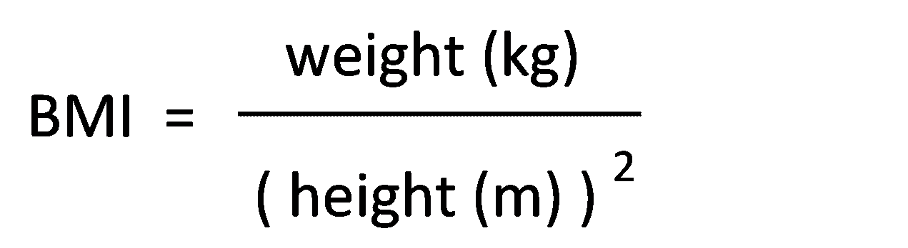

18: Body mass index
1. Use this formula to calculate your BMI.

If you do not know how to use this formula, follow these steps:
2. Enter your BMI in the health passport.
What to do next: After you complete this activity, please proceed with the "Heart Rate" activity.